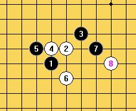
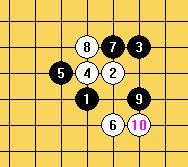
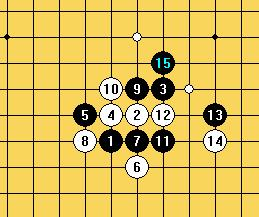

自战棋评 VS游戏人间篇---运筹帷幄决胜于千里之外
首页
五子棋交流
#1 自战棋评 VS游戏人间篇---运筹帷幄决胜于千里之外 作者：啊呆 发表时间：2011-5-29 1:47:04
第一次与大鱼老师下慢棋面对世界冠军半点也马虎不得应全力施为事实上我也是这么做的大鱼老师对我开出了疏星一打
思量良久没有交换原因有二
一翻了翻棋谱一打中常见的7并不是很好下
例如：

二想领略一下大师的攻杀能力
大鱼老师下了个出乎我意料的7 面对这个相对比较陌生的7我只得老老实实的一步步强防行棋至15手

16有两处强防
#2 Re:自战棋评 VS游戏人间篇---运筹帷幄决胜于千里之外 作者：啊呆 发表时间：2011-5-29 2:18:43
N久没打字了 错别字连篇 改了N遍 望大家海涵～
顺便顶一下自己的帖子.....
［ 掌棋宣传员 于 2011-5-29 10:13:51 时花20金币送鲜花一朵］
［ 掌棋宣传员 于 2011-5-29 10:13:53 时花20金币送鲜花一朵］
#3 Re:自战棋评 VS游戏人间篇---运筹帷幄决胜于千里之外 作者：^版徒 发表时间：2011-5-29 2:26:56
好像还有几个错别字
#4 Re:自战棋评 VS游戏人间篇---运筹帷幄决胜于千里之外 作者：啊呆 发表时间：2011-5-29 2:31:35
还有很多 正在修正....
#5 Re:自战棋评 VS游戏人间篇---运筹帷幄决胜于千里之外 作者：极地剑客 发表时间：2011-5-29 3:47:10
解说很详细，而且两位都下的很好。给花
#6 Re:自战棋评 VS游戏人间篇---运筹帷幄决胜于千里之外 作者：gerbo 发表时间：2011-5-29 8:37:12
请问下啊呆老师：下面怎么就必胜了？刚才自己看下感觉不到哪里可以杀了，后用软件算了下还是没算到杀。。请指导下。。
=======上图对应的爱五子棋谱代码如下，以便你拆解：========
h8i9j10h9g9i7i8g8i10h10j8j9l9l8j11i12k12l11k10m10h12g13f9f10d10d9f7e7g5f5d7g4h3e4
======================================================给个简单的毛巾毯可以么。。。我想学习你的思路~~~
例如：35防34、32中间，或者34上面一格，或者34下面一格，还有很多防点。。汗~~
为了不耽误你的时间，等你有时间了，一定要回啊~~~拜托~~~~恳求。。。
［此帖子已被 gerbo 在 2011-5-29 8:44:54 编辑过］
［此帖子已被 gerbo 在 2011-5-29 8:46:35 编辑过］
#7 Re:自战棋评 VS游戏人间篇---运筹帷幄决胜于千里之外 作者：啊呆 发表时间：2011-5-29 10:46:29
=======上图对应的爱五子棋谱代码如下，以便你拆解：========
h8i9j10h9g9i7i8g8i10h10j8j9l9l8j11i12k12l11k10m10h12g13f9f10d10d9f7e7g5f5d7g4e4h3i2h5
======================================================这个我拆过确实是白必胜
这个是直觉告诉我白能胜 等我有空了帮你拆拆～
=======上图对应的爱五子棋谱代码如下，以便你拆解：========
h8i9j10h9g9i7i8g8i10h10j8j9l9l8j11i12k12l11k10m10h12g13f9f10d10d9f7e7g5f5d7g4h3e4
======================================================
#8 Re:自战棋评 VS游戏人间篇---运筹帷幄决胜于千里之外 作者：中中 发表时间：2011-5-29 13:10:48
耐心学习完了，一年半载消化不了。
阿呆老师v5.
［ 啊呆 于 2011-5-29 13:12:22 时花20金币送鲜花一朵］
#9 Re:自战棋评 VS游戏人间篇---运筹帷幄决胜于千里之外 作者：啊呆 发表时间：2011-5-29 13:12:42
楼上过奖了～
#10 Re:自战棋评 VS游戏人间篇---运筹帷幄决胜于千里之外 作者：岑小鱼 发表时间：2011-5-29 13:19:36
思路清晰严谨....精彩的对局。
#11 Re:自战棋评 VS游戏人间篇---运筹帷幄决胜于千里之外 作者：踵酃 发表时间：2011-5-29 14:26:50
 确实很精彩，不过你得头像让我头晕，跳上跳下地，眼睛疲劳
确实很精彩，不过你得头像让我头晕，跳上跳下地，眼睛疲劳
#12 Re:自战棋评 VS游戏人间篇---运筹帷幄决胜于千里之外 作者：啊呆 发表时间：2011-5-29 14:30:31
哈哈 刚换的 多可爱的小猪猪挖～
话说 我自己看着也有点头晕....
［此帖子已被 啊呆 在 2011-5-29 14:31:19 编辑过］
#13 Re:自战棋评 VS游戏人间篇---运筹帷幄决胜于千里之外 作者：雪飞 发表时间：2011-5-29 14:42:57
精彩的多图解说，已收藏到茶刊，为编排，图片和文字略有修改。
#14 Re:自战棋评 VS游戏人间篇---运筹帷幄决胜于千里之外 作者：游戏人间 发表时间：2011-5-29 15:23:31
 顺便说一句从23开始到39都没拆。。。人脑算的。。。后面感觉不好防了才开始拆。。发现已经晚了。。
顺便说一句从23开始到39都没拆。。。人脑算的。。。后面感觉不好防了才开始拆。。发现已经晚了。。 ［ 岑小鱼 于 2011-5-29 15:32:40 时花20金币送鲜花一朵］
［ 啊呆 于 2011-5-29 15:37:18 时花20金币送鲜花一朵］
［ 锐 于 2011-5-29 16:33:35 时花20金币送鲜花一朵］
#15 Re:自战棋评 VS游戏人间篇---运筹帷幄决胜于千里之外 作者：aabb 发表时间：2011-5-29 17:25:26
都这么猛的啊。。纯人下慢棋。。
#16 Re:自战棋评 VS游戏人间篇---运筹帷幄决胜于千里之外 作者：极地剑客 发表时间：2011-5-29 17:29:42
无敌神的境界很高啊~昨天看完贴子的时候就觉得你可能是纯人脑~太强大了,NB啊.另外AIVO也象人脑啊.
#17 Re:自战棋评 VS游戏人间篇---运筹帷幄决胜于千里之外 作者：梧桐风 发表时间：2011-5-29 19:07:50
好文啊~学习了~